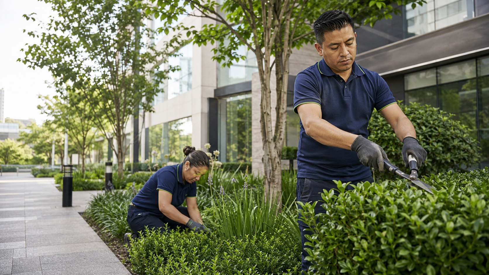
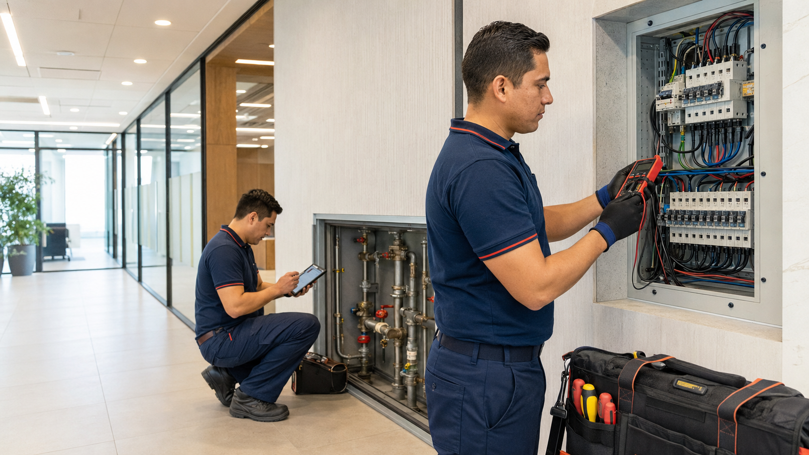

Limpieza
Oficinas, áreas comunes, sanitarios, comedores, pisos, alfombras y superficies especiales.
- Limpieza diaria y profunda
- Control de químicos y consumibles
- Turnos y frecuencias adaptables
Coordinamos limpieza, jardinería, fumigación y mantenimiento con una operación clara, cercana y medible.
NOVERZA integra servicios esenciales bajo una misma forma de trabajar. Diseñamos cada operación según el inmueble, sus horarios, riesgos y prioridades.
El alcance, las frecuencias, los materiales y el personal se dimensionan después de conocer tu operación.
Oficinas, áreas comunes, sanitarios, comedores, pisos, alfombras y superficies especiales.

Cuidado de jardines, jardineras y áreas exteriores con programas preventivos y estacionales.
Prevención y control de plagas con diagnóstico, evidencia, bitácoras y seguimiento.

Atención preventiva y correctiva menor para conservar instalaciones funcionales.
Espacios, horarios, actividades, riesgos y accesos.
Personal, frecuencias, equipos, productos y responsables.
Selección, inducción, rutas, materiales y documentación.
Inicio controlado, medición, ajustes y seguimiento.
Analizaremos el inmueble, el alcance y tus prioridades para preparar una propuesta clara.